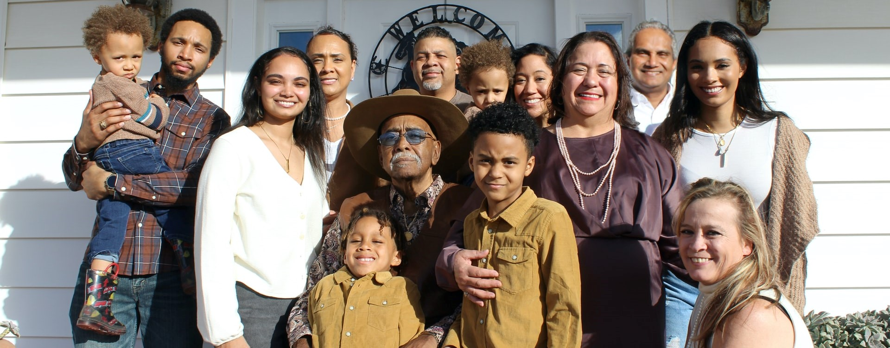
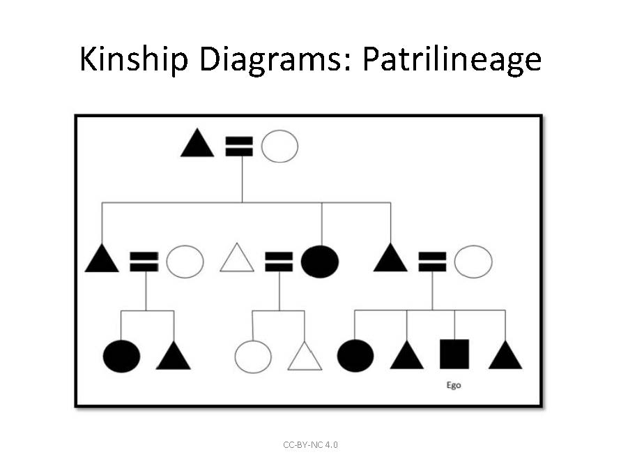
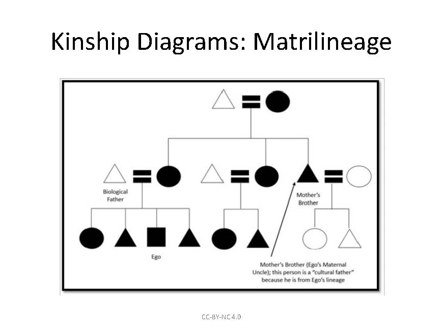
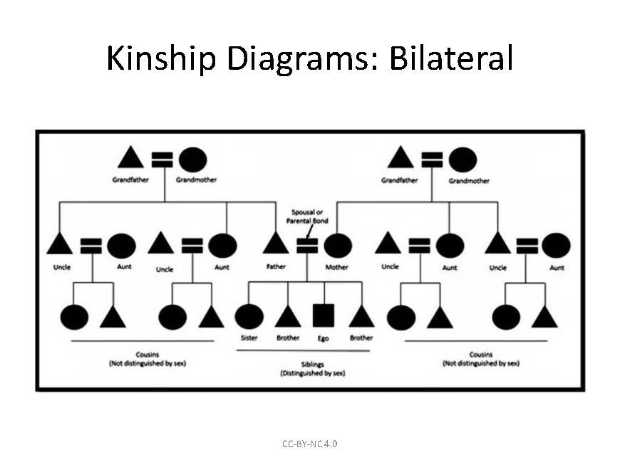
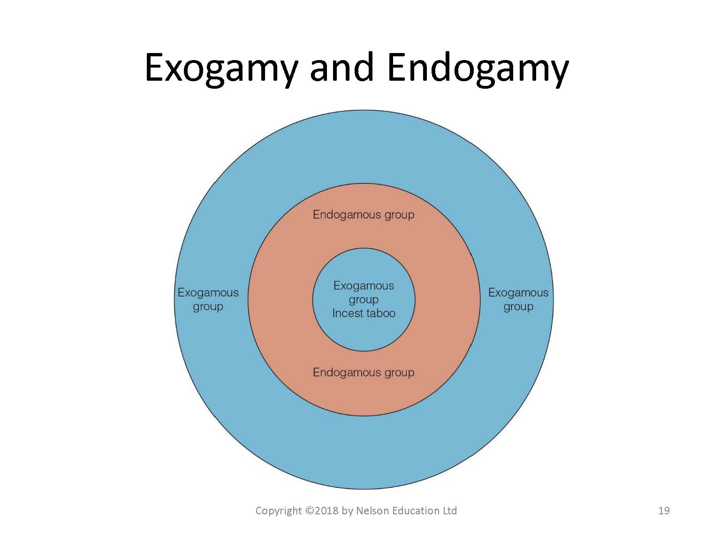
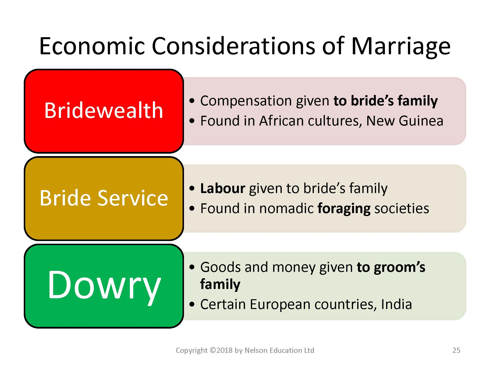
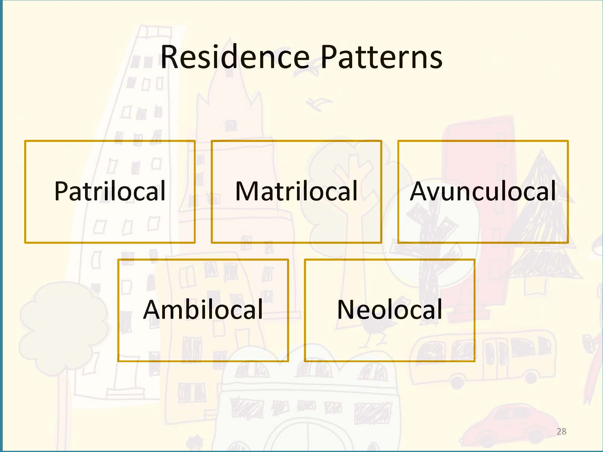
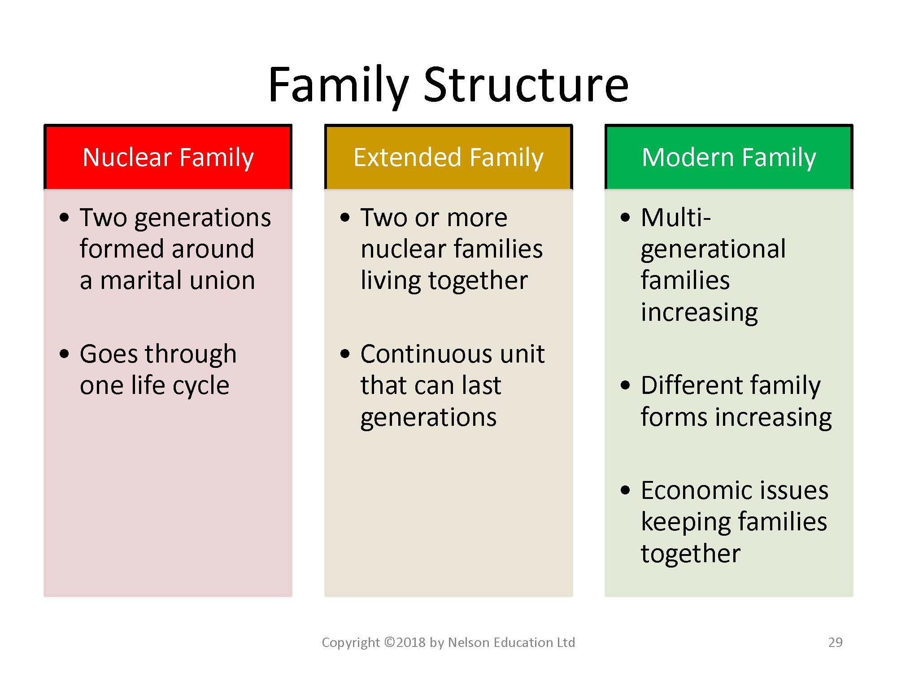

6 Understanding Social Structures of Family

Photo by Rajiv Perera from Unsplash
Overview
In Unit 4, we will study how societies around the world demonstrate remarkable variation in cultural understandings of family and marriage, and in how roles have certain rights and responsibilities, and provide status, privilege and power. Through readings and videos you will learn about different types of marriage: who you can and may not marry, age for marriage, number of partners in marriage, and whether you even have a choice in choosing your marriage partner or in deciding where you will live or how many children you will have.
Topics
This unit is divided into the following topics:
- Kinship and Descent
- A Comparison of Kinship Terms in 4 Cultures: Croatia, China, Navajo, USA
- A Comparison of Kinship Terms in 4 Cultures: Croatia, China, Navajo, USA
- Marriage and Family
- A Comparison of 4 Types of Love: Papua New Guinea, Kenya, South India, Scotland
Learning Outcomes
When you have completed this unit, you should be able to:
- Discuss the variation in rights and responsibilities and how these are associated with roles and status within a family and community.
- Identify the differences between kinship establish by blood and kinship established by marriage.
- Describe and illustrate the variety of human families cross-culturally; discern the different terms that define types of relationship.
- Distinguish between matrilineal, patrilineal, and bilateral kinship systems.
- Describe the variety of human families cross-culturally with examples.
- Evaluate the differences between dowry and bridewealth, as well as between different types of post-marital residence.
- Illustrate, with cultural examples, the types of relationship involving love and/or marriage.
Activity Checklist
Here is a checklist of learning activities you will benefit from in completing this unit. You may find it useful for planning your work. Note that all Learning Lab activities contribute towards your Participation mark for this course.
- At the bottom of the page in Topic 1, students will find some important resources. There are a number of readings and slides for you to review. Additionally, take a few moments to watch through the video.
- At the bottom of the page in Topic 1, students will find some important resources. There are a number of readings and slides for you to review. Additionally, take a few moments to watch through the videos.
Note: Some of these resources may be considered controversial. The intention, however, is to engage in dialogue and consider the cultural context as it relates to the subject matter of this unit.
The content from these videos will be discussed during this unit’s Learning Lab so come prepared for a discussion.
Learning Lab
The Learning Lab in Unit 4 will begin with a group discussion on the subject matter from the videos in Topic 2. Be sure to preview the videos before arriving to the Learning Lab.
Additionally, this Learning Lab will introduce the concept of Kinship Maps. Students will watch a video during the Learning Lab that explains how to create a Kinship Map and what the purpose of one is. This will serve as important background information before you begin your assignment for Unit 4. Your Facilitator will be leading the discussion - take some time to review the information found on the “Assessment” tab for Unit 4 before you arrive.
Assessment
For Unit 4, each student is expected to submit a Kinship map. The instructions and some resources are posted on the “Assessment” tab in Unit 4. It is strongly recommended that you review this page prior to attending your Learning Lab as the Facilitator will be providing some additional information.
Once you have completed your assignment, submit it for grading by uploading it to the Kinship and Descent Mapping - Activity #2 dropbox found on the bottom of the page.
Topic 1 Resources
- Brown, N., de González, L. T., McIlwraith, T. F., & American Anthropological Association. (2018). Perspectives: An Open Invitation to Cultural Anthropology.
- Wesch, M. (2018). The Art of Being Human: A Textbook for Cultural Anthropology. New Prairie Press.
- Other online resources will be provided in the unit.
6.1 Kinship and Descent
Unit 4 begins by introducing the idea of kinship. In particular, we will explore an important question: Who are the people you are related to by blood or through marriage?
This topic covers terms and linkages for how to different ethnic groups identify and interact with their relatives.
This topic also follows Chapter 8 in your Perspectives textbook. In this chapter, you will be introduced to a lot of new terminology. You do not need to memorize every term in the chapter glossary, but you should be able to work with terminology and understand that the same term can mean different things in different cultures, (e.g. who is ‘mother’) and the same relationship can have different terms (e.g. a female marriage partner can be a first or third wife, or a widow or be re-married to her deceased husband’s brother).
We begin with a more in-depth study with the resources below….
Resources
The resources below will help you better understand the content explored in this unit. Take some time to explore this material - it will be discussed during the Learning Lab and will play an important role in course assessments.
Activity
To begin, take some time to read about Family and Marriage. Here you will be introduced to some important terms, and ideas, when it comes to our understanding of what “family” actually means. Below is a set of slides that are to be followed in conjunction with the reading - they will help focus your attention:
Click to Open
Learning Objectives
- Human families cross-culturally
- Parental rights and responsibilities
- Kinship systems
- Marriage exchanges (dowry and bridewealth)
- Post-marital residence
Rights, Responsibilities, Statuses and Roles in Families
- Words used to describe family members (“…” or “…”) indicate …
- Status - a …-designated position a person occupies … (“…” or “…”)
- Role - the set of … of a person who …
Kinship and Descent
- Kinship - culturally … between …
- Both blood (…) and marriage (…), as well … “…”
- Both blood (…) and marriage (…), as well … “…”
- Descent - how people …
- Patrilineal - …
- Matrilineal - …
- Bilateral - …
- Patrilineal - …
The Formation of Descent Groups
- Patrilineal
- Most common
- …
- Daughters …
- Most common
- Matrilineal
- …% of …
- Inheritance through …
- Sons …
- …% of …
Kinship and Descent
- Lineage - … from a …
- Matrilineage (descent) does not … (…)
- Example: Nayar of …
- Men and women … after marriage
-… as “relatives” since … matrilineage
- Men and women … after marriage




Kinship Terminology
- The terms used … particular categories of …
- Differences provide … about …
- Generation : Some … based on generation, e.g., …, …, and their … are …
- Sex or gender : … together because of …; e.g., …, father,…, etc. are …
- A term not … by gender in … is cousins.
Principles of Kinship Classification
- Generation
- Generation
- Sex or Gender
- Sex or Gender
- Lineality versus …
- Lineality versus …
- Consanguineal versus …
- Consanguineal versus …
- Relative Age
- Relative Age
- Sex of …
- Sex of …
- Social …
- Social …
- … the Family
CASE STUDY
- Croatia
- Uncles: … (stric) is …, while mother’s brother (…) is …
- …
- Different names for family statuses reflect different roles
- Different names for family statuses reflect different roles
- Navajo
- People are “…’s clan
- People are “…’s clan
- United States
- …, equally related …
Functions of Marriage
- To … between men and women to … and …
- To … between men and women to … and …
- To provide …
- To provide …
- To create an … that supports the …, …, and … needs of …
Marriage and Family
- Nuclear family
- two …
- two …
- … - at least three generations
- … or Joint family
- … or Joint family
- Serial …
- marriage to a succession of spouses, one at a time
- marriage to a succession of spouses, one at a time
- Polygamy
- … or multiple husbands
- … or Polyandry
- … or multiple husbands
Number of Spouses
- Monogamy
- One …
- Canada, the U.S.A., …
- One …
- Polygyny
- … at a time
- …, China, Asia, …, Middle East
- … at a time
- Polyandry
- … at a time
- Remote …
- … at a time
Who Can You Marry?
- Endogamy - …
- Exogamy - …
- Marriages have been arranged throughout …
- If someone dies, then …
- Sororate and …



Mate Selection: Who can you NOT marry?
- The Incest taboo: …
Mariage Exchanges
- Marriage Exchanges - most often given …
- Dowry - gifts given …
- Bridewealth - gifts given …

Families, Households, and Domestic Groups
- Family - …
- Household/Domestic Group - … pertaining to domestic life (may also include …)
Post-Marital Residence
- … - the family in which a person is raised
- Family of procreation - …
- Residence patterns
- …
- Patrilocal
- …
- …
- …


Download the Chapter and read it as you follow along with the set of slides:
Watch and Reflect
We now shift our focus to learning more about kinship systems. Below is a short clip that focuses on Australian Aboriginal Kinship Systems.
As you watch the video, note that the terms of reference to family members, is common in smaller collective societies. Learn that you can have more than one mother, and discover that when using other cultural ways of identifying relationships, you could have more brothers and sisters than you thought you had.
6.2 Marriage and Family
We next shift our focus to exploring cultural norms about marriage and family. Below, this topic will be studied using several videos showing uncommon practices. Some ideologies and practices are unique to small and isolated people groups (e.g. marriage among the Na people living in the foothills of the Himalayas (Perspectives, 2020, p. 254)). Other perspectives, however, are not universal, but are global in that they are found in societies around the world - especially nowadays due to migration transferring traditional practices into modern cities (e.g. female genital mutilation). Some gender practices are harmful and have been addressed by advocacy groups. Examples of these include child marriage, dowry deaths, and honor killings. Many of these practices that you will learn about, are changing due to the influence of globalization, as members of their communities are exposed to contrasting outsider practices.
We begin with our resources below:
Topic 2 Resources
The resources below will help you better understand the content explored in this unit. Take some time to explore this material - it will be discussed during the Learning Lab and will play an important role in course assessments.
We begin with resources that tell stories of how love and relationships are seen in societal structures around the world. Most of the practices you will watch and read about may not be practiced in your country or ethno-cultural group; however, they are still practiced to a greater or lesser extent, depending on country laws and changing cultural patterns. Many of these practices are changing due to global objections and the work of advocacy groups that fight for the basic Human Rights of dignity and equality of all persons.
The first video you are to watch is about child brides in India, Yemen, Afghanistan, Nepal and Ethiopia. Very often child brides are not the only wife, they may be the first or last wife in a polygamous marriage. The next video shows you what polygamy looks like in Togo, West Africa.
The article “Love in Four Cultures” illustrates how love is experienced in Papua New Guinea, in a Masai boarding school in Kenya, in a village in South India, and in Scotland. Sometimes, marriages are not built on love, but on family agreements that require a dowry or payment to either the bride’s family or groom’s family. Some dowry practices are harmful and may even be unethical or illegal, as you will see in the last video filmed in Bangladesh and India.
With each of these practices, it is likely that there are stark differences to how your family expresses love, and observes marriage and family customs. Note that these practices need to be understood before they are criticized. Your purpose here should be to understand the practice, and why and how it is practiced.
Activity Learning
We begin our study of marriage practices around the world by watching a video on The Secret World of Child Brides. Every year, throughout the world, millions of young girls are forced into marriage. Child marriage is outlawed in many countries, and international agreements forbid the practice, yet this tradition still spans continents, language, religion, and caste.
This multi-media presentation reveals child marriage practices in India, Yemen, Afghanistan, Nepal and Ethiopia. It is important for you to be informed about the difficult experiences child brides face. Read the notes under the video to learn about how you can get involved in taking action against this practice.
Over an eight-year period, photographer Stephanie Sinclair has investigated the phenomenon of child marriage in India, Yemen, Afghanistan, Nepal and Ethiopia. Her multimedia presentation, produced in association with National Geographic, synthesizes this body of work into a call to action.
Stephanie Sinclair’s images are featured in a story on child marriage in the June 2011 issue of National Geographic magazine.
How to help: National Geographic has compiled a list of organizations that encourage families to delay marriage and give girls an opportunity to reach their full potential.
In a related post Stephanie Sinclair shares the difficult experiences child brides face. She discusses the need for their voices to be heard and the challenges she faced as a journalist who witnessed their struggles and abuse.
To learn more, follow the link:
This next video shifts focus to the idea of polygamy as a practice of marriage. It features a Muslim tribe in Togo, West Africa, that practices polygamy. For them, another wife means another set of hands to do the work…:
Next, we explore the opposite of polygamy: polyandry. Here, we are introduced to one group of people in the Himalayas that practices the lifestyle of a woman having multiple husbands.
Reading
Our focus now turns to a reading by Wesch on Love in the Four Cultures. As you read, reflect on the role of love, passion, choice, and commitment play in marriage in the four different cultures. Love in Four Cultures
Watch and Reflect
Our last resources for this section looks at an ancient marriage custom called “paying dowry.” Paying dowry is an ancient marriage custom whereby money and goods are transferred from a woman’s family to her new husband’s family. While it is officially banned in Bangladesh and India, there still is a demand for this type of economic advantage. For women, it often leads to a life of suffering, even torture and death. As you watch, Reflect on how you can take action against family violence.
6.3 Learning Lab
The Learning Lab for Unit 4 will focus on expanding our understanding of some of the themes and concepts from Topics 1 and 2 in this unit. Before you arrive to this unit’s Learning Lab, be sure to review the content from each section.
In addition to these discussions, the Facilitator will also be introducing the idea of kinship systems - this component of the Learning Lab will be integral for your Kinship and Descent Mapping - Activity #2 assignment you will be submitting at the end of Unit 4.
To learn more about kinship systems, and to help prepare you for your assignment, watch the video below - as you watch, compare your own understanding of family relationships to what you are learning about here.6.4 Assessment
For this assignment, each student will be completing and submitting a kinship diagram. To complete this assignment, follow the directions on the link below:
You are welcome to sign up for a free account as well…
Each student is expected to draw their own kinship diagram according to the directions outlined in the link above. Each kinship diagram should include the following:
- At least three generations
- you, your parents, and your grandparents
- you, your parents, and your grandparents
- Both paternal sides
- All siblings of both parents
- All immediate relationships
- i.e marriage and children
This diagram should capture all the people you are in your direct circle of relationships.
Note: This activity may be completed in any format you like - it does, however, need to be uploaded to the dropbox below. If you choose to use pen and paper to complete this assignment, please take a picture and attach it as your assignment - be sure it is clear enough for the instructor to see.
The following criteria will be used to assess your submission:
: | :– | :- |
A+ | 4 | Above and beyond. Outstanding visual presentation and write-up. An A+ effort will involve several of the following: risk-taking, innovative thinking, resolving a difficult contradiction or paradox, and connecting or synthesizing ideas. |
A | 3.8 | Excellent work. Clear evidence that the core ideas of the topic or assignment have been understood and implemented. |
B | 3 | Good work, but there is not clear evidence that the core ideas of the topic or assignment have been understood, or the work could be improved through better writing, more writing, or better visuals. |
C+ | 2.2 | Fair work. Work is complete but it appears rushed and unpolished, or there is no evidence of understanding and some evidence of misunderstanding. |
D | 1 | Poor work. Work was submitted but it is incomplete, incorrect, or off the mark. |
F | 0 | Very poor work. Something was submitted but it is minimal, incomplete, wrong, or off the mark. |
Once you have completed your diagram, submit it for grading by selecting the Kinship and Descent Mapping - Activity #2 assignment dropbox at the bottom of the page.
This activity will represent 4% of your overall grade for the course - this submission will be graded by your Facilitator.